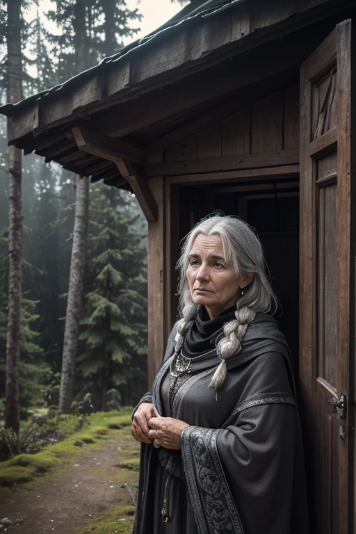

You cautiously step into the cabin and take a peek inside. Despite the outside appearance, the inside was well-kept, and the smell of some soup made your stomach grumble, reminding you that you probably hadn’t eaten in at least a day.
“Aww you poor dear, you must be starving. Luckily for you, I have a pot full of stew just waiting to be eaten,” the old woman croaked as she closed the front door and shuffled towards the kitchen.
“Make yourself at home,” you heard her call from the kitchen.
You looked around the well-furnished cabin. A dining table sat in the middle of the room. To your left was the doorway the old lady went through, which meant it was probably the kitchen. Moving to the dining table, you quietly took a seat and looked around the room’s various decorations as you waited for the woman to arrive with the stew.
The old woman came by a bowl of what looked and smelled to be delicious beef and potato stew.
“Enjoy,” she hummed, taking the seat beside you.
Consume the stew.